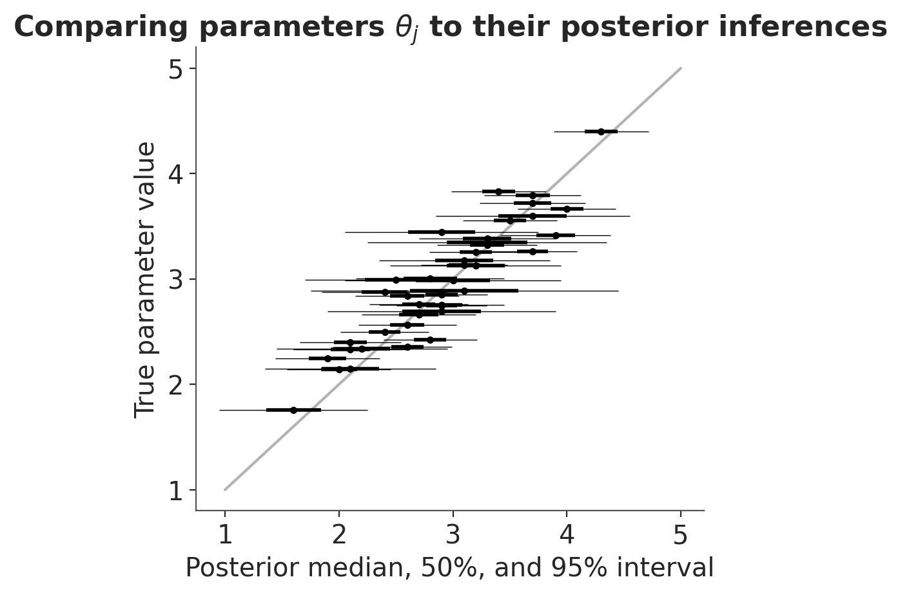
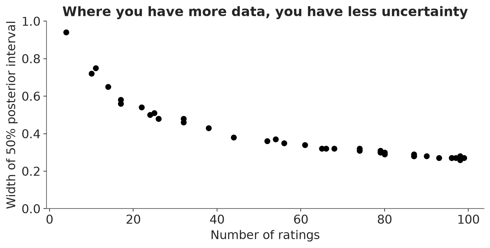
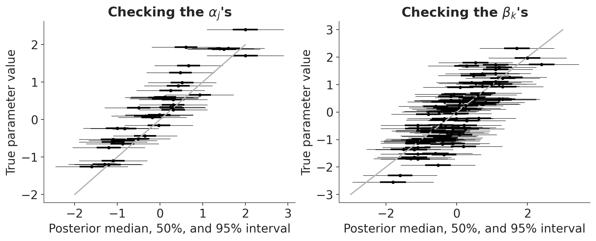
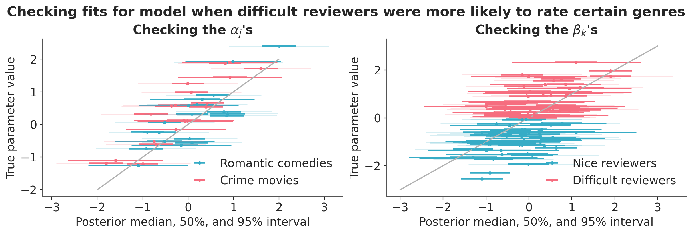
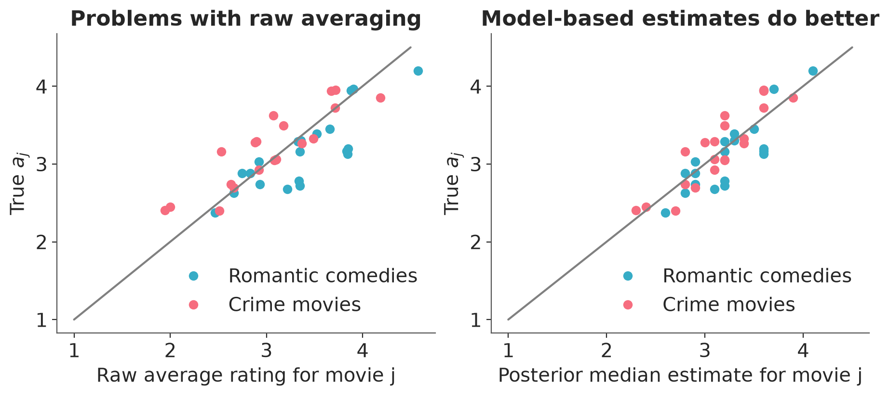

import sys
import warnings
sys.path.insert(0, '..')
import arviz as az
import matplotlib.pyplot as plt
import numpy as np
import pandas as pd
import xarray as xr
from cmdstanpy import CmdStanModel, disable_logging
from utils import print_stan
warnings.filterwarnings("ignore")
disable_logging()
az.style.use("arviz-variat")
az.rcParams["stats.ci_prob"] = 0.95
plt.rcParams["figure.dpi"] = 100
SEED = 1234
rng = np.random.default_rng(SEED)Simulated data of movie ratings
This notebook includes the code for the Bayesian Workflow book Chapter 16 Coding a series of models: Simulated data of movie ratings.
1 Introduction
Consider the following scenario. You are considering which of two movies to go see. Both have average online ratings of 4 out of 5 stars, but one is based on 2 ratings and the other is based on 100. Which movie should you choose?
Load packages
2 Model for two movies
y_1 = np.array([3, 5])
y_2 = np.repeat([2, 3, 4, 5], [10, 20, 30, 40])
y = np.concatenate([y_1, y_2])
N = len(y)
movie = np.repeat([1, 2], [len(y_1), len(y_2)])
movie_data = {"y": y, "N": N, "movie": movie}mod_1 = CmdStanModel(stan_file="ratings_1.stan")
print_stan(mod_1)data {
int N;
vector[N] y;
array[N] int<lower=1, upper=2> movie;
}
parameters {
vector<lower=0, upper=5>[2] theta;
real<lower=0> sigma_y;
}
model {
theta ~ normal(3, 1);
y ~ normal(theta[movie], sigma_y);
/* equivalently:
for (j in 1:2){
theta[j] ~ normal(3, 1);
}
for (n in 1:N){
y[n] ~ normal(theta[movie[n]], sigma_y);
}
*/
}
Sample
fit_1 = mod_1.sample(data=movie_data, seed=SEED, show_progress=False)idata_1 = az.from_cmdstanpy(fit_1)Posterior summary
az.summary(idata_1, var_names=["theta", "sigma_y"])| mean | sd | eti95_lb | eti95_ub | ess_bulk | ess_tail | r_hat | mcse_mean | mcse_sd | |
|---|---|---|---|---|---|---|---|---|---|
| theta[0] | 3.64 | 0.56 | 2.5 | 4.7 | 2853 | 1223 | 1.00 | 0.01 | 0.007 |
| theta[1] | 3.988 | 0.102 | 3.8 | 4.2 | 3133 | 2504 | 1.00 | 0.0018 | 0.0013 |
| sigma_y | 1.022 | 0.073 | 0.89 | 1.2 | 3210 | 2864 | 1.00 | 0.0013 | 0.00094 |
3 Extending the model to J movies
J = 40
N_ratings = rng.integers(0, 101, size=J)
N = N_ratings.sum()
movie = np.repeat(np.arange(1, J + 1), N_ratings)
theta_true = rng.normal(3.0, 0.5, size=J)
y = rng.normal(np.repeat(theta_true, N_ratings), 2.0)
movie_data = {"y": y, "N": N, "J": J, "movie": movie}mod_2 = CmdStanModel(stan_file="ratings_2.stan")
print_stan(mod_2)data {
int N;
vector[N] y;
int J;
array[N] int<lower=1, upper=J> movie;
}
parameters {
vector<lower=0, upper=5>[J] theta;
real<lower=0> sigma_y;
}
model {
theta ~ normal(3, 1);
sigma_y ~ normal(0, 2.5);
y ~ normal(theta[movie], sigma_y);
}Sample
fit_2 = mod_2.sample(data=movie_data, seed=SEED, show_progress=False)idata_2 = az.from_cmdstanpy(fit_2)Posterior summary
az.summary(idata_2, var_names=["theta", "sigma_y"]).head()| mean | sd | eti95_lb | eti95_ub | ess_bulk | ess_tail | r_hat | mcse_mean | mcse_sd | |
|---|---|---|---|---|---|---|---|---|---|
| theta[0] | 3.717 | 0.198 | 3.3 | 4.1 | 5965 | 2796 | 1.00 | 0.0026 | 0.0017 |
| theta[1] | 2.416 | 0.201 | 2 | 2.8 | 5996 | 2930 | 1.00 | 0.0026 | 0.0018 |
| theta[2] | 3.057 | 0.198 | 2.7 | 3.4 | 5720 | 3251 | 1.00 | 0.0026 | 0.0019 |
| theta[3] | 3.248 | 0.307 | 2.6 | 3.8 | 5290 | 2933 | 1.00 | 0.0042 | 0.003 |
| theta[4] | 3.73 | 0.44 | 2.9 | 4.6 | 3704 | 1538 | 1.00 | 0.0072 | 0.005 |
Comparing parameters \(\theta_j\) to their posterior inferences
median =az.median(idata_2.posterior["theta"])
q_50 =az.iqr(idata_2.posterior["theta"])
q_95 =az.iqr(idata_2.posterior["theta"], quantiles=[0.025, 0.975])
_, ax = plt.subplots(figsize=(4.5, 4.5))
ax.errorbar(median, theta_true, xerr=q_50/2, color="k", lw=2, fmt=".")
ax.errorbar(median, theta_true, xerr=q_95/2, color="k", lw=0.5, fmt="none")
ax.plot([1, 5], [1, 5], color="0.7", zorder=-1)
ax.set(xlabel="Posterior median, 50%, and 95% interval",
ylabel="True parameter value",
title="Comparing parameters $\\theta_j$ to their posterior inferences");
Where you have more data, you have less uncertainty
_, ax = plt.subplots(figsize=(8, 4))
ax.plot(N_ratings, q_50, "ko")
ax.set(ylim=(0, 1),
xlabel="Number of ratings",
ylabel="Width of 50% posterior interval",
title="Where you have more data, you have less uncertainty");
4 Item-response model with parameters for raters and for movies
4.1 Balanced data
J = 40
K = 100
N = J * K
movie = np.repeat(np.arange(1, J + 1), K)
rater = np.tile(np.arange(1, K + 1), J)
mu = 3
sigma_a = 0.5
sigma_b = 0.5
sigma_y = 2
alpha_true = rng.normal(0, 1, size=J)
beta_true = rng.normal(0, 1, size=K)
y = rng.normal(mu + sigma_a * alpha_true[movie - 1] - sigma_b * beta_true[rater - 1], sigma_y)
data_3 = {"N": N, "J": J, "K": K, "movie": movie, "rater": rater, "y": y}mod_3 = CmdStanModel(stan_file="ratings_3.stan")
print_stan(mod_3)data {
int N;
vector[N] y;
int J;
int K;
array[N] int<lower=1, upper=J> movie;
array[N] int<lower=1, upper=K> rater;
}
parameters {
vector[J] alpha;
vector[K] beta;
real mu;
real<lower=0> sigma_a;
real<lower=0> sigma_b;
real<lower=0> sigma_y;
}
transformed parameters {
vector[J] a = mu + sigma_a * alpha;
}
model {
y ~ normal(a[movie] - sigma_b * beta[rater], sigma_y);
alpha ~ normal(0, 1);
beta ~ normal(0, 1);
mu ~ normal(3, 5);
sigma_a ~ normal(0, 5);
sigma_b ~ normal(0, 5);
sigma_y ~ normal(0, 5);
}Sample
fit_3 = mod_3.sample(data=data_3, seed=SEED, show_progress=False)idata_3 = az.from_cmdstanpy(fit_3)Posterior summary
az.summary(idata_3, var_names=["mu", "sigma_a", "sigma_b", "sigma_y"])| mean | sd | eti95_lb | eti95_ub | ess_bulk | ess_tail | r_hat | mcse_mean | mcse_sd | |
|---|---|---|---|---|---|---|---|---|---|
| mu | 3.202 | 0.097 | 3 | 3.4 | 1073 | 1630 | 1.00 | 0.003 | 0.0022 |
| sigma_a | 0.499 | 0.069 | 0.38 | 0.65 | 1233 | 1588 | 1.00 | 0.002 | 0.0017 |
| sigma_b | 0.504 | 0.051 | 0.41 | 0.61 | 1741 | 2320 | 1.00 | 0.0012 | 0.00091 |
| sigma_y | 1.9737 | 0.0231 | 1.9 | 2 | 8520 | 3253 | 1.00 | 0.00025 | 0.00017 |
Checking the \(\alpha_j\)’s and \(\beta_k\)’s
alpha_median = az.median(idata_3.posterior["alpha"])
alpha_q50 = az.iqr(idata_3.posterior["alpha"])
alpha_q90 = az.iqr(idata_3.posterior["alpha"], quantiles=[0.025, 0.975])
beta_median = az.median(idata_3.posterior["beta"])
beta_q50 = az.iqr(idata_3.posterior["beta"])
beta_q90 = az.iqr(idata_3.posterior["beta"], quantiles=[0.025, 0.975])
_, axes = plt.subplots(1, 2, figsize=(10, 4))
axes[0].errorbar(alpha_median, alpha_true, xerr=alpha_q50/2, color="k", lw=2, fmt=".")
axes[0].errorbar(alpha_median, alpha_true, xerr=alpha_q90/2, color="k", lw=0.5, fmt="none")
axes[0].plot([-2, 2], [-2, 2], color="0.7")
axes[0].set(xlabel="Posterior median, 50%, and 95% interval",
ylabel="True parameter value",
title="Checking the $\\alpha_j$'s")
axes[1].errorbar(beta_median, beta_true, xerr=beta_q50/2, color="k", lw=2, fmt=".")
axes[1].errorbar(beta_median, beta_true, xerr=beta_q90/2, color="k", lw=0.5, fmt="none")
axes[1].plot([-3, 3], [-3, 3], color="0.7")
axes[1].set(xlabel="Posterior median, 50%, and 95% interval",
ylabel="True parameter value",
title="Checking the $\\beta_k$'s");
4.2 Unbalanced data
genre = np.array(["romantic"] * (J // 2) + ["crime"] * (J - J // 2))
prob_of_rated = np.where(beta_true[rater - 1] > 0,
np.where(genre[movie - 1] == "romantic", 0.2, 0.7),
np.where(genre[movie - 1] == "romantic", 0.7, 0.2))
rated = rng.random(N) < prob_of_rated
data_3a = {"N": rated.sum(), "J": J, "K": K,
"movie": movie[rated], "rater": rater[rated],
"y": y[rated]}Sample
fit_3a = mod_3.sample(data=data_3a, seed=SEED, show_progress=False)idata_3a = az.from_cmdstanpy(fit_3a)Posterior summary
az.summary(idata_3a, var_names=["mu", "sigma_a", "sigma_b", "sigma_y"])| mean | sd | eti95_lb | eti95_ub | ess_bulk | ess_tail | r_hat | mcse_mean | mcse_sd | |
|---|---|---|---|---|---|---|---|---|---|
| mu | 3.189 | 0.101 | 3 | 3.4 | 2844 | 2963 | 1.00 | 0.0019 | 0.0014 |
| sigma_a | 0.476 | 0.078 | 0.34 | 0.64 | 1930 | 2879 | 1.00 | 0.0018 | 0.0014 |
| sigma_b | 0.473 | 0.073 | 0.33 | 0.62 | 1375 | 2332 | 1.00 | 0.002 | 0.0014 |
| sigma_y | 1.9468 | 0.0333 | 1.9 | 2 | 6138 | 2813 | 1.00 | 0.00043 | 0.00031 |
Checking fits for model when difficult reviewers were more likely to rate certain genres
alpha_median = az.median(idata_3a.posterior["alpha"])
alpha_q50 = az.iqr(idata_3a.posterior["alpha"])
alpha_q95 = az.iqr(idata_3a.posterior["alpha"], quantiles=[0.025, 0.975])
beta_median = az.median(idata_3a.posterior["beta"])
beta_q50 = az.iqr(idata_3a.posterior["beta"])
beta_q95 = az.iqr(idata_3a.posterior["beta"], quantiles=[0.025, 0.975])
fig, axes = plt.subplots(1, 2, figsize=(12, 4))
romantic_mask = genre == "romantic"
crime_mask = genre == "crime"
axes[0].errorbar(alpha_median[romantic_mask], alpha_true[romantic_mask], xerr=alpha_q50[romantic_mask]/2, color="C0", lw=2, fmt=".", label="Romantic comedies")
axes[0].errorbar(alpha_median[crime_mask], alpha_true[crime_mask], xerr=alpha_q50[crime_mask]/2, color="C1", lw=2, fmt=".", label="Crime movies")
axes[0].errorbar(alpha_median[romantic_mask], alpha_true[romantic_mask], xerr=alpha_q95[romantic_mask]/2, color="C0", lw=0.5, fmt="none")
axes[0].errorbar(alpha_median[crime_mask], alpha_true[crime_mask], xerr=alpha_q95[crime_mask]/2, color="C1", lw=0.5, fmt="none")
axes[0].set(xlabel="Posterior median, 50%, and 95% interval",
ylabel="True parameter value",
title="Checking the $\\alpha_j$'s")
axes[0].plot([-2, 2], [-2, 2], color="0.7")
axes[0].legend(loc="lower right", frameon=False)
nice_mask = beta_true < 0
difficult_mask = beta_true > 0
axes[1].errorbar(beta_median[nice_mask], beta_true[nice_mask], xerr=beta_q50[nice_mask]/2, color="C0", lw=2, fmt=".", label="Nice reviewers")
axes[1].errorbar(beta_median[difficult_mask], beta_true[difficult_mask], xerr=beta_q50[difficult_mask]/2, color="C1", lw=2, fmt=".", label="Difficult reviewers")
axes[1].errorbar(beta_median[nice_mask], beta_true[nice_mask], xerr=beta_q95[nice_mask]/2, color="C0", lw=0.5, fmt="none")
axes[1].errorbar(beta_median[difficult_mask], beta_true[difficult_mask], xerr=beta_q95[difficult_mask]/2, color="C1", lw=0.5, fmt="none")
axes[1].set(xlabel="Posterior median, 50%, and 95% interval",
ylabel="True parameter value",
title="Checking the $\\beta_k$'s")
axes[1].plot([-3, 3], [-3, 3], color="0.7")
axes[1].legend(loc="lower right", frameon=False)
fig.suptitle("Checking fits for model when difficult reviewers were more likely to rate certain genres");
5 Comparison to naive data averaging
ybar = np.array([y[(movie == j) & rated].mean() for j in range(1, J + 1)])
a_true = mu + sigma_a * alpha_true
a_post_median = az.median(idata_3a)["a"]_, axes = plt.subplots(1, 2, figsize=(9, 4))
axes[0].plot(ybar[romantic_mask], a_true[romantic_mask],
"C0o", label="Romantic comedies")
axes[0].plot(ybar[crime_mask], a_true[crime_mask],
"C1o", label="Crime movies")
axes[0].set(xlabel="Raw average rating for movie j",
ylabel="True $a_j$",
title="Problems with raw averaging")
axes[0].plot([1, 4.5], [1, 4.5], color="gray")
axes[0].legend(loc="lower right", frameon=False)
axes[1].plot(a_post_median[romantic_mask], a_true[romantic_mask],
"C0o", label="Romantic comedies")
axes[1].plot(a_post_median[crime_mask], a_true[crime_mask],
"C1o", label="Crime movies")
axes[1].set(xlabel="Posterior median estimate for movie j",
ylabel="True $a_j$",
title="Model-based estimates do better")
axes[1].plot([1, 4.5], [1, 4.5], color="gray")
axes[1].legend(loc="lower right", frameon=False);
References
Licenses
- Code © 2022–2025, Andrew Gelman, licensed under BSD-3.
- Text © 2022–2025, Andrew Gelman, licensed under CC-BY-NC 4.0.